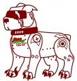

A Little Bit About This Page
Posted on December 1st, 2011 by Eric Hecht
This is my Time Capsule, a page that I designed in my senior year at Grandville High School. This was the final project for Web Design in Mr. Dollof's class. If You actually manage to read this ten years from now awesome!! I hope you had one hell of a fun ride along the way. But hey take a look around the page.
Cheers,
Your Past Self Eric.